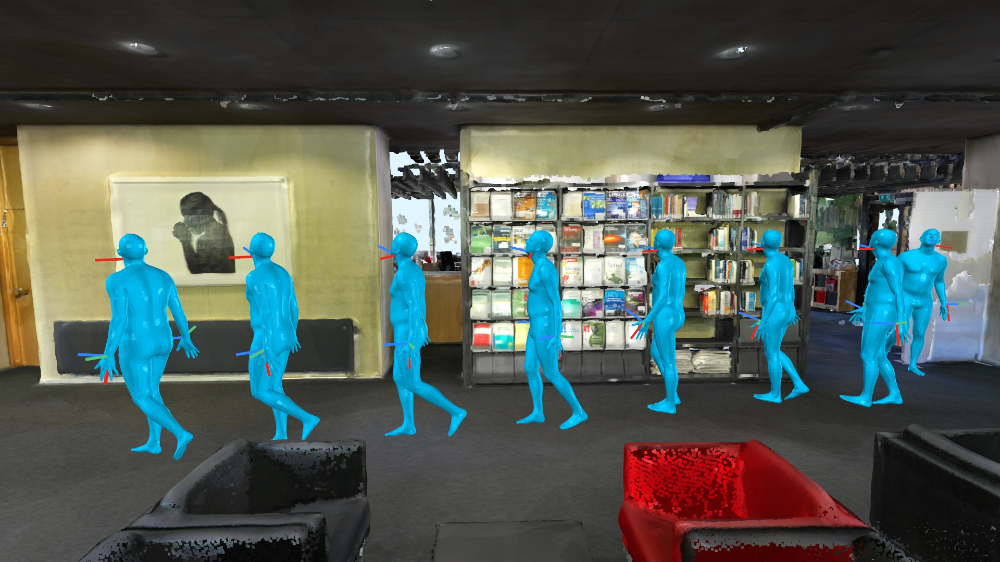
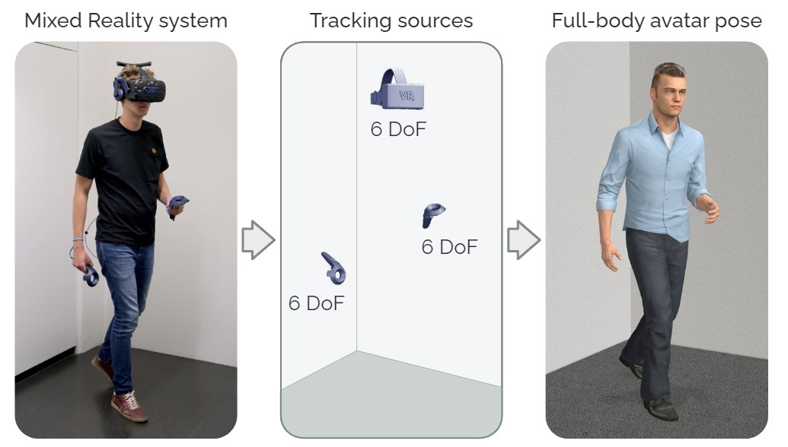
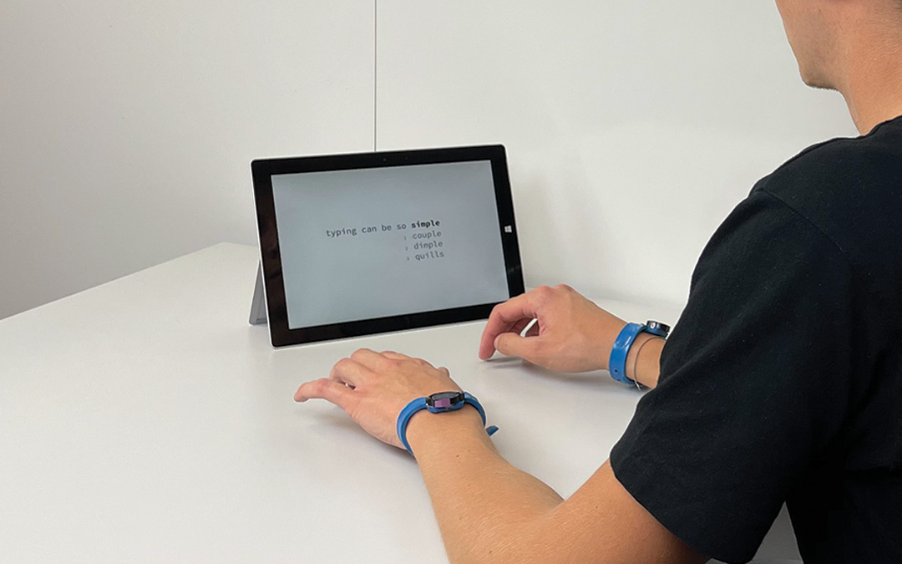
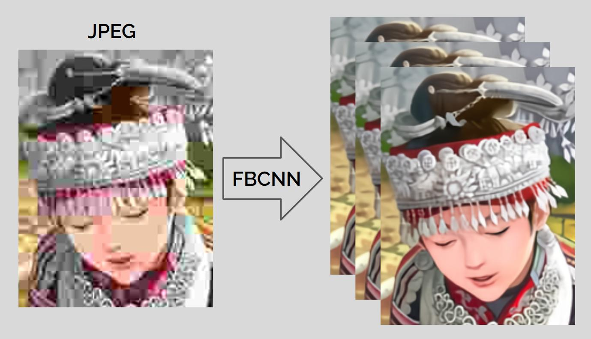
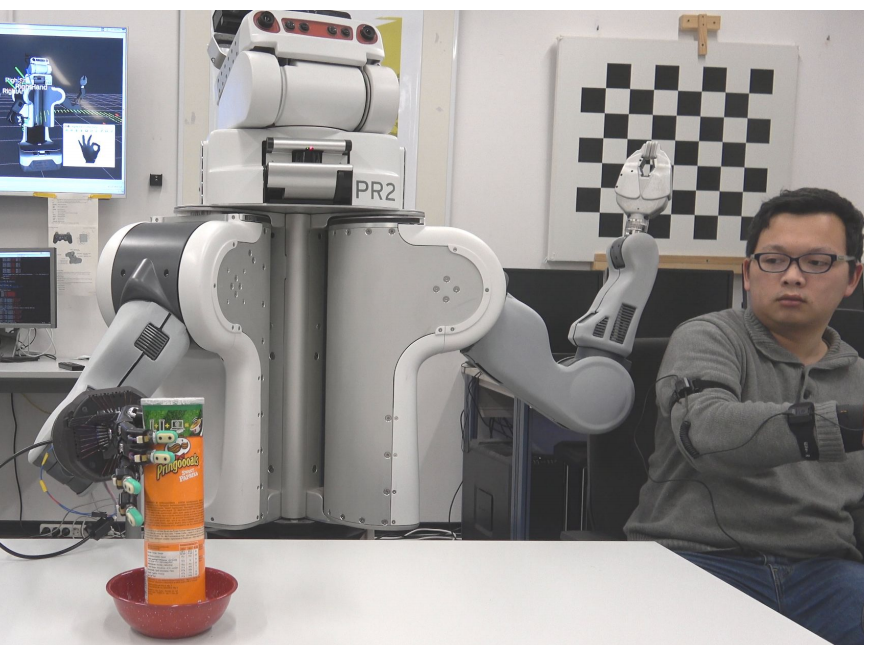

Jiaxi Jiang 蒋佳熹
PhD Student in Computer Science
ETH Zurich, Switzerland
Google Scholar|Github|LinkedIn|Twitter|Email
Follow
@cs_jiaxi_jiang
About Me
I am a PhD student at the Sensing, Interaction & Perception Lab, ETH Zurich with Prof. Christian Holz. My research interests lie at the intersection of Computer Vision, Machine Learning, and Human-Computer Interaction. Currently, I am working on egocentric full-body human motion modelling and estimation.
Before starting my PhD, I got my Master’s degree in Computational Engineering Science from RWTH Aachen University. I wrote my Master’s thesis on Image Restoration at the Computer Vision Lab, ETH Zurich, with Dr. Kai Zhang and Prof. Radu Timofte, supervised by Prof. Luc Van Gool and Prof. Bastian Leibe. Before that, I did a visiting research with Dr. Shuang Li and Prof. Jianwei Zhang at the University of Hamburg. Besides, I also worked with Dr. Jörg Stückler at Max Planck Institute for Intelligent Systems, and with Dr. Dengxin Dai at Max Planck Institute for Informatics.
Collaboration
If you are a motivated BS/MS student and would like to write your thesis with me, you are welcome to drop me an email. The current available thesis projects can be found at our lab's website SIPLAB (inside the ETHZ network) or SiROP (for logged in users). If you have any questions about my research or would like to collaborate with me, please also reach out to me.
News
- 09/2022 I am awarded the Springorium Commemorative Coin during the graduation ceremony by RWTH Aachen.
- 07/2022 One paper is accpeted by ECCV 2022.
- 02/2022 One paper is accepted by CHI 2022.
- 07/2021 I join Sensing, Interaction & Perception Lab, ETH Zurich as a research assistant.
- 07/2021 My master's thesis is accepted by ICCV 2021! Great appreciation to Dr. Kai Zhang and Prof. Radu Timofte!
- 04/2021 I get my master's degree with distinction from RWTH Aachen University.
- 09/2020 I start my master's thesis at the Computer Vision Lab, ETH Zurich as a IDEA League research student.
- 06/2020 One paper is accepted by IROS 2020.
Publications
-

EgoPoser: Robust Real-Time Ego-Body Pose Estimation in Large Scenes ArXiv, 2023. Paper BibTeX
@article{jiang2023egoposer, title={EgoPoser: Robust Real-Time Ego-Body Pose Estimation in Large Scenes}, author={Jiang, Jiaxi and Streli, Paul and Meier, Manuel and Holz, Christian}, journal={arXiv preprint arXiv:2308.06493}, year={2023} } -

AvatarPoser: Articulated Full-Body Pose Tracking from Sparse Motion Sensing European Conference on Computer Vision (ECCV), 2022. Paper Poster Project Page BibTeX Code
@inproceedings{jiang2022avatarposer, title={Avatarposer: Articulated full-body pose tracking from sparse motion sensing}, author={Jiang, Jiaxi and Streli, Paul and Qiu, Huajian and Fender, Andreas and Laich, Larissa and Snape, Patrick and Holz, Christian}, booktitle={European Conference on Computer Vision}, pages={443--460}, year={2022}, organization={Springer} } -

TapType: Ten-Finger Text Entry on Everyday Surfaces via Bayesian Inference ACM CHI Conference on Human Factors in Computing Systems (CHI), 2022. Paper Video Demo BibTeX
@inproceedings{chi2022-taptype, author = {Streli, Paul and Jiang, Jiaxi and Fender, Andreas and Meier, Manuel and Romat, Hugo and Holz, Christian}, title = {TapType: Ten-finger text entry on everyday surfaces via Bayesian inference}, year = {2022}, isbn = {9781450391573}, publisher = {Association for Computing Machinery}, address = {New York, NY, USA}, doi = {https://doi.org/10.1145/3491102.3501878}, booktitle = {Proceedings of the 2022 CHI Conference on Human Factors in Computing Systems}, numpages = {16} } -

Towards Flexible Blind JPEG Artifacts Removal International Conference on Computer Vision (ICCV), 2021. Paper Poster BibTeX Code
@inproceedings{jiang2021towards, title={Towards Flexible Blind JPEG Artifacts Removal}, author={Jiang, Jiaxi and Zhang, Kai and Timofte, Radu}, booktitle={Proceedings of the IEEE/CVF International Conference on Computer Vision}, pages={4997--5006}, year={2021} } -

A Mobile Robot Hand-Arm Teleoperation System by Vision and IMU International Conference on Intelligent Robots and Systems (IROS), 2020. Paper Video Code BibTeX
@inproceedings{li2020mobile, title={A mobile robot hand-arm teleoperation system by vision and imu}, author={Li, Shuang and Jiang, Jiaxi and Ruppel, Philipp and Liang, Hongzhuo and Ma, Xiaojian and Hendrich, Norman and Sun, Fuchun and Zhang, Jianwei}, booktitle={2020 IEEE/RSJ International Conference on Intelligent Robots and Systems (IROS)}, pages={10900--10906}, year={2020}, organization={IEEE} }
Academic Services
Reviewers
Computer Vision: CVPR, ICCV, ECCV
Computer Graphics: SIGGRAPH, SIGGRAPH Asia
Artificial Intelligence: NeurIPS, AAAI
Human-Computer Interaction: CHI, IEEE VR
Teaching Assistant
Mixed Reality, ETH Zurich, Autumn 2023
Big Data For Engineers, ETH Zurich, Spring 2023
Student Thesis
Xuejing Luo, Master Thesis, M.Sc. in Robotics, Systems and Control, ETH Zurich, 05.2023 - Now
Xintong Liu, Master Thesis, M.Sc. in Robotics, Systems and Control, ETH Zurich, 03.2023 - Now
Filip Stanisic, Semester Thesis, M.Sc. in Electrical Engineering, ETH Zurich, 03.2023 - 07.2023
Huajian Qiu, Master Thesis, M.Sc. in Computational Science and Engineering, EPFL, 2021.10-2022.01